Assemble your avatar in the Animaze editor
In this guide, we will import from scratch one of our hybrid avatars, namely Abel Gene.
Note that this files folder structure is mandatory for the import process of 3D and hybrid avatars:
1. *.fbx geometry file name the same as the folder name
2. Textures (.tga, .png, .jpg files) go in Textures/ folder
3. Animations (exported as solo .fbx files) go in the Animations/ folder
What is different about hybrid avatars compared to 3D ones, is that they benefit from animated cubism textures. Make sure the cubism textures are placed in the Resource folder of the Animaze Editor.
Now follow these steps to begin importing your model:
1. Open the Animaze Editor, navigate to Assets and select Import 3D Object.
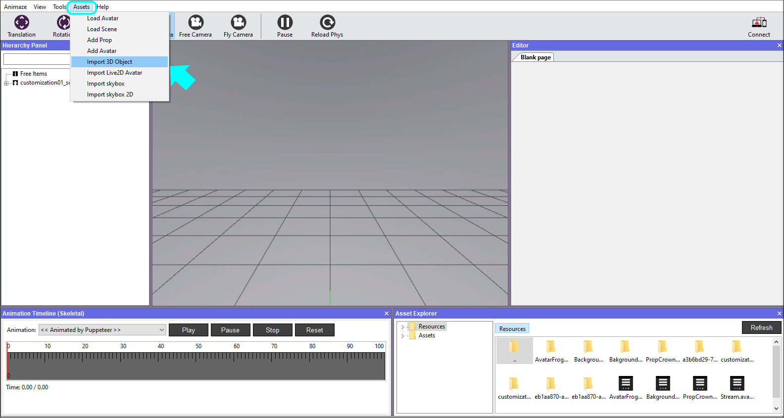
2. Select the model's geometry file, the .fbx file, from your PC.
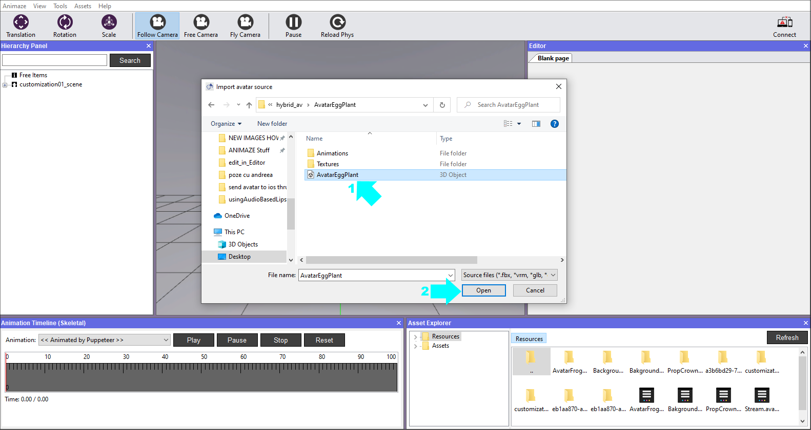
3. The following window prompts you to select the files you want to import. If this is your first time importing a specific model, make sure all the files are marked and select the item type from the dropdown list before clicking Import.
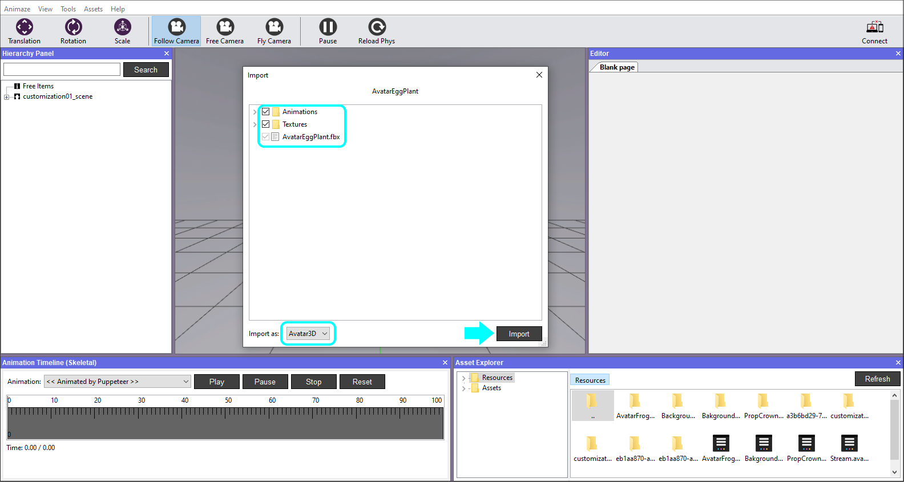
4. An Import Log will be displayed after the Animaze Editor checks the files for issues. The warning system checks for skeletal animations. Hit the Ok button to dismiss. As you work on more complicated models, these logs will surface errors and help you with debugging.
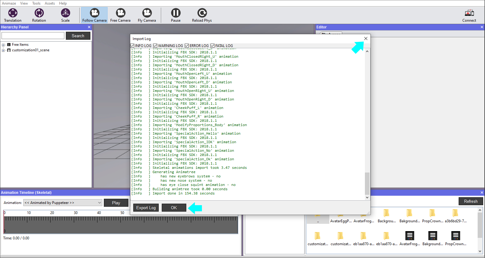
For the avatars to be usable and rendered correctly, it is required for them to have a certain size. The imported geometry sometimes comes in way too large or way too small from the 3D editing software, so we need to scale it to an appropriate value. A grid unit is equal to a unit in the metric system.
5. In the Editor Panel, change the size of the avatar by adjusting the value of Item scale. In this case, the imported avatar is too large, therefore we have reduced the size from 1.00000 to 0.018000, so that the end-result is correct. Now it’s too small to see it, so we need to adjust our camera view. Go to the Hierarchy Panel and right click on the avatar, then select Reset camera.
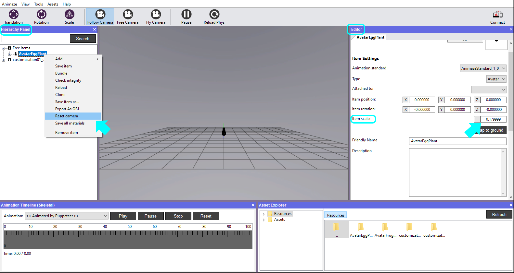
Start adding components & textures on meshes.
First, we'll need to select the mesh material by either expanding the avatar in the Hierarchy Panel, then selecting the mesh under the Mesh section, or by simply clicking the desired mesh in the viewport. All properties will show up in the Editor Panel on the right.
6. Select the mesh named Body in the Hierarchy Panel and then move your attention to the Editor Panel in the right. Scroll down and push the Add Component button. We have prepared the following textures for this avatar’s mesh: diffuse, normal map, specular, environment mapping, subsurface scaterring and the cubism diffuse, normal & specular textures, so we will therefore add the components corresponding to these textures. Hit Ok after you marked them in the Add Component window.
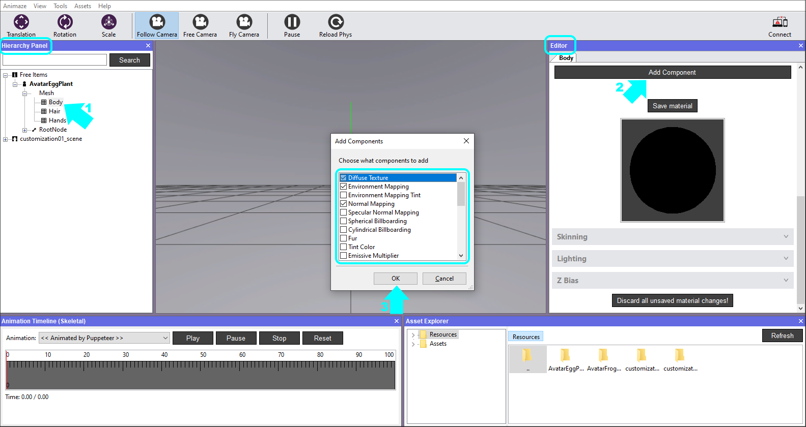
7. In the Editor Panel, expand the Diffuse Texture tab to expand it. Click on the texture box and choose the texture your prepared for this material in the Select texture window that opened.
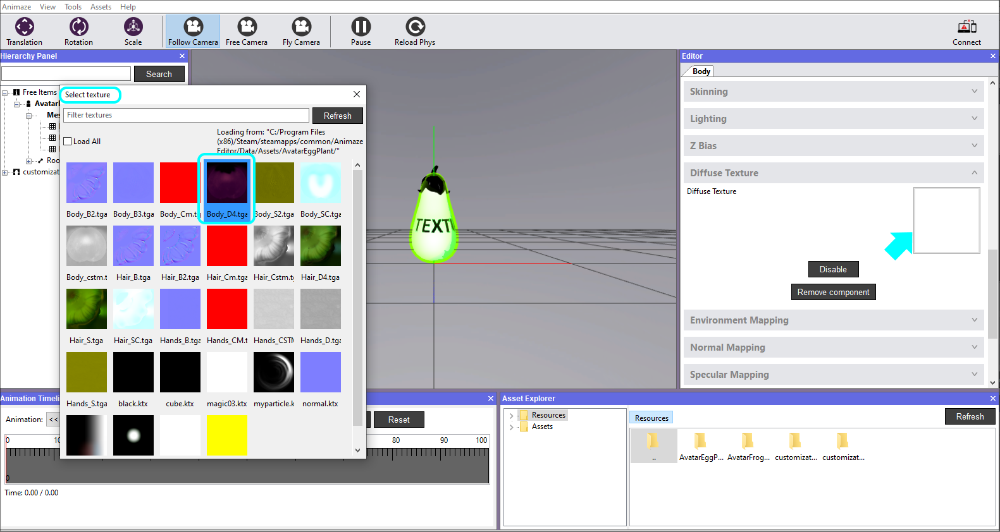
8. Repeat the action for the Cubism textures. It will prompt you to select the *.json file, pick it up from the Resource folder where you placed it.
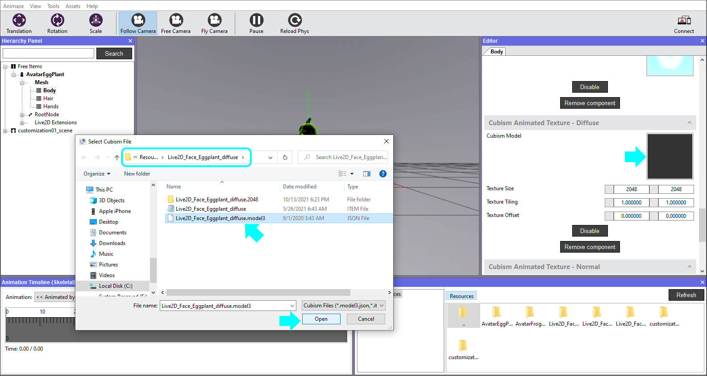
9. This is how the cubism textures will be displayed on the avatar. Let’s adjust their details in the next step.
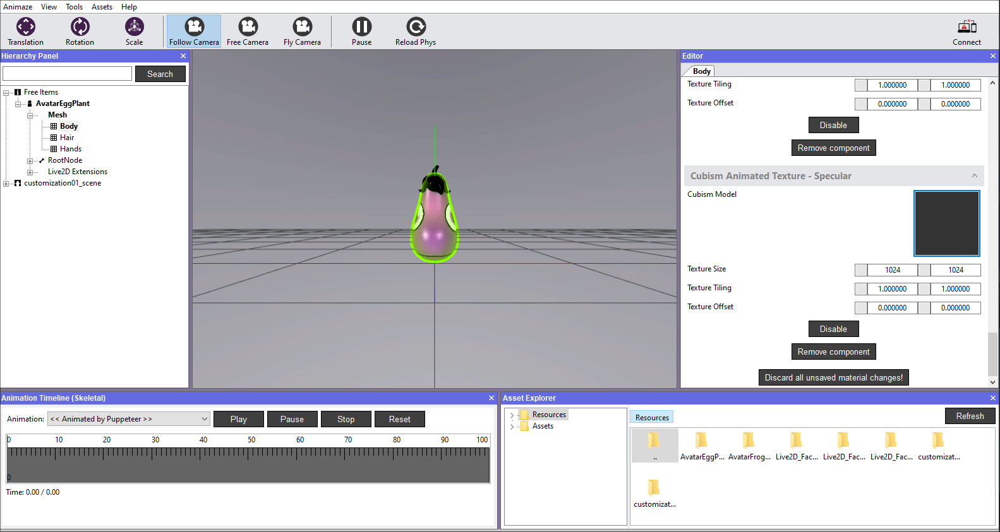
10. Adjust the Texture Tiling to change the dimension of the 2D face reported to the 3D geometry. Adjust further the Texture Size and the Texture Offset to obtain the look you need on your avatar. Note that the values must be identitcal across the cubism textures, in this case, in order to match.
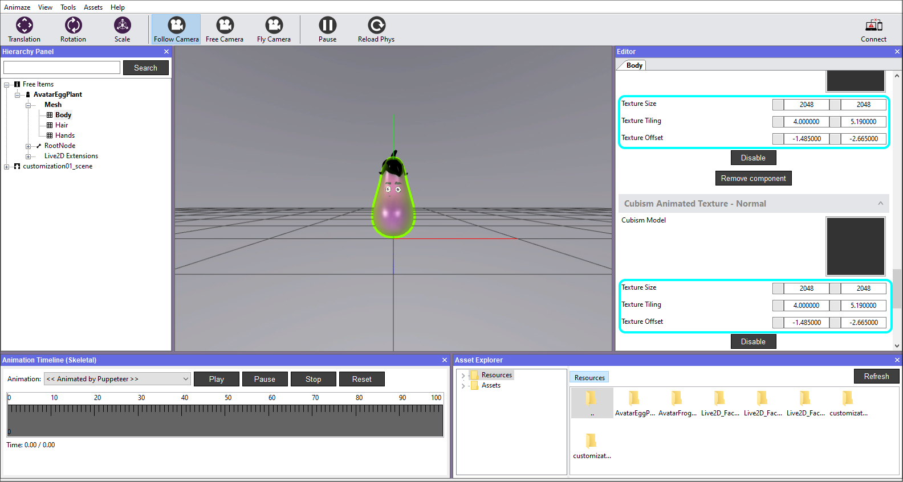
11. Save each Live2D extension by right-clicking them in the Hierarchy Panel and choosing Save item.
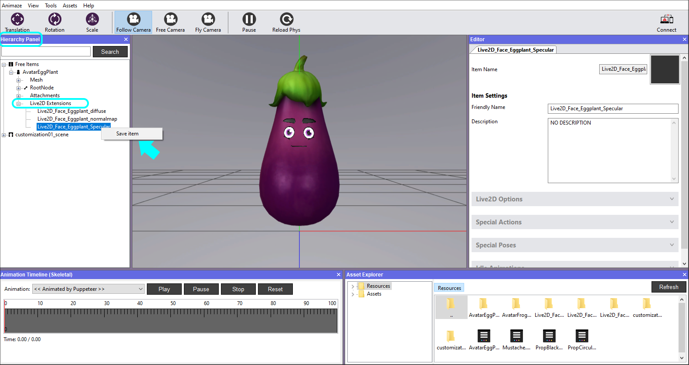
12. Go through every mesh and assign your textures accordingly and modify what component values you see fit. When you are happy with your results, go to Hierarchy Panel, right-click the avatar and select Save all materials, afterwich repeat the action and select Save item.
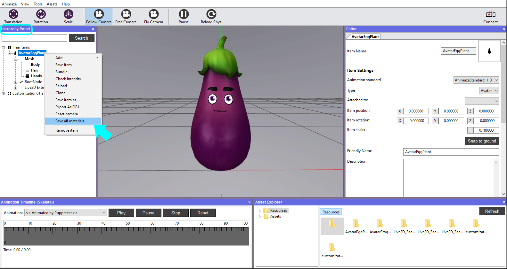
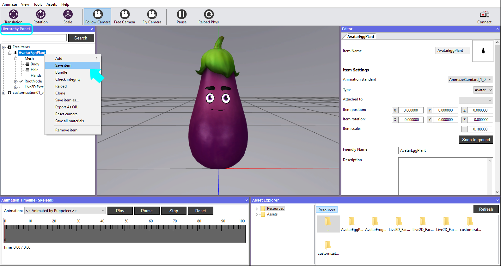
Note
- The model will work with only 1 animated texture, it is not mandatory to have all 3 of them (ex: use just the diffuse texture)
Starting with the end of March, Animaze supports more uses for animated textures created using Live2D Cubism technology for hybrid avatars. In addition to Animated Diffuse Maps (that were possible before) you can now also have:
- Animated Normal Maps
- Animated Emissive Maps
As a teaching resource for creating these kinds of assets, here is a link to all the source data for Avatar Lily. These include: